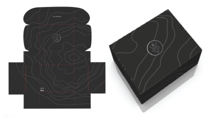
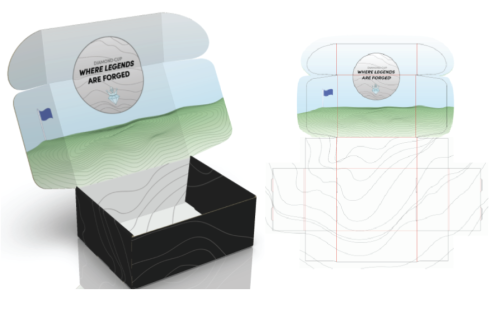
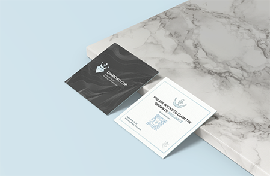

Design Knowledge Includes Adobe Illustrator, Photoshop, InDesign, Dreamweaver, and iMovie
In my consumer packaging course, I learned the importance of combining branding, design, and technology. In groups of three, we entered the AICC packaging design competition. We defined our demographic, created a logo, and used Esko Studio Designer to create 3D renderings of our designs. We then conducted research about the most cost effective and environmentally friendly inks and substrates to use for our packaging. While our design did not place in the competition, the judges personally reached out to express how impressed they were with our research, collaboration, and design.
Outside Design
Inside Design
Inserts
Throughout the graphic communication course "Digital File Prep and Workflow," I designed and printed my own playing cards. I learned terminology and techniques used in the creation of digital files and workflow systems. In addition, I learned how to effectively preflight and proof my file to ensure accurate printing.
Corinna Alandt, a breast cancer survivor, documented her journey of healing in order to aid and inspire others with a similar diagnosis. She reached out to me and asked if I would be willing to illustrate her book. She had a clear idea for the artwork: a decorative frame to outline the quotes that helped her through her diagnosis. After showing me a few examples of what she envisioned, I created a border in Adobe Illustrator that fit her specifications. Her book, “My Promise: One Woman’s Journey of Healing from Breast Cancer” can be purchased on Amazon. It was such an honor to be chosen to illustrate her inspiring book!
I created this sticker in Adobe Illustrator for my Flexographic Printing class. File preparation was vital – I kept organized layers (dieline, artwork, and varnish layers) that made the preflight process effortless. I also appropriately applied bleeds, trapping, knockout, and ensured my design met FIRST specifications. Finally, using ESKO, I repeated my sticker on a press sheet to be printed. Then the sticker design was printed on the Mark Andy 2200 Flexographic Press located on campus.

Hi, my name is Kelsey Deuth and I am a student at California Polytechnic State University, San Luis Obispo. I am pursuing a Bachelor of Science in Graphic Communication, concentrating in User Experience and User Interface, and minoring in Integrated Marketing Communications. I have extensive experience with Adobe Creative Cloud, including Illustrator, Photoshop, InDesign, and Dreamweaver. I am also skilled in HTML, CSS, JavaScript, and Python. My design and marketing skills aided me in coding this website to serve as a working portfolio for my projects. In my free time I love exploring outside, playing with my dog, going to the beach, and baking. Thank you for taking the time to view my work!